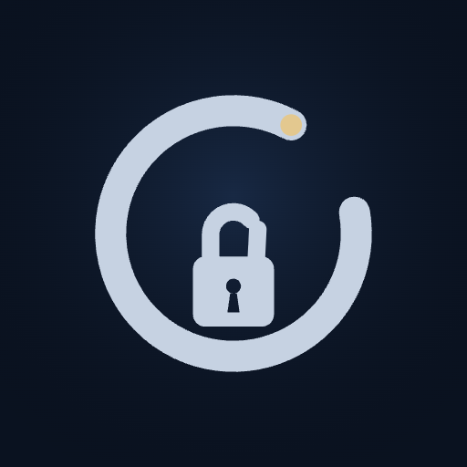
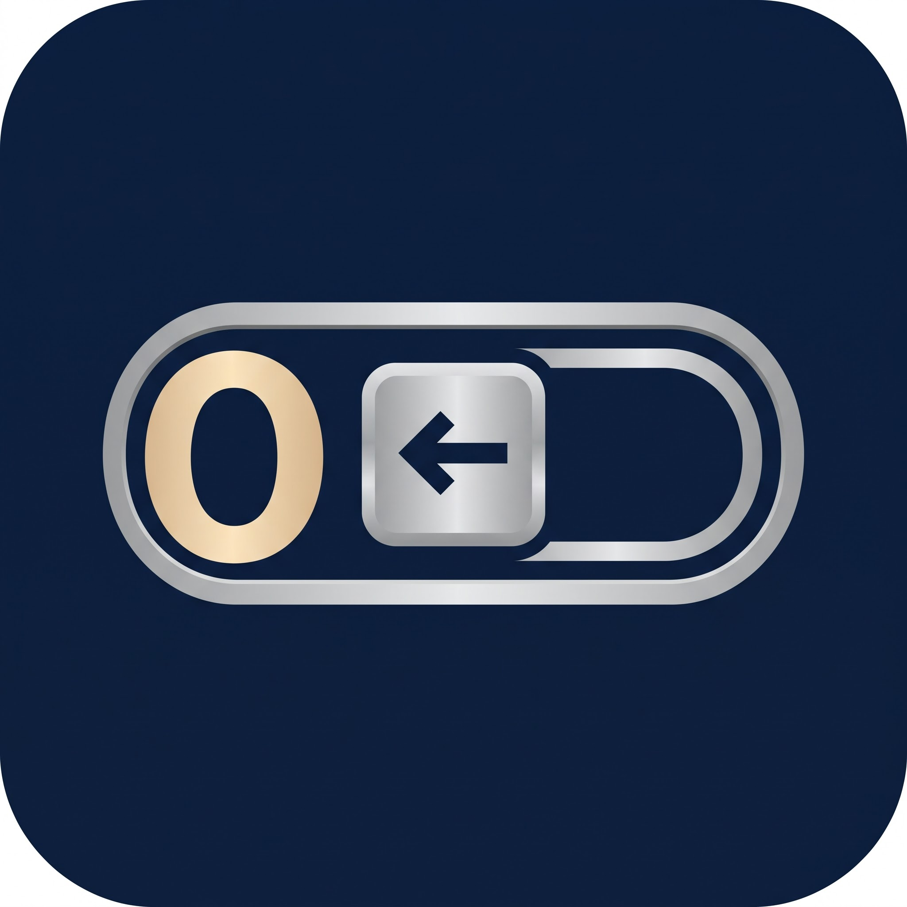
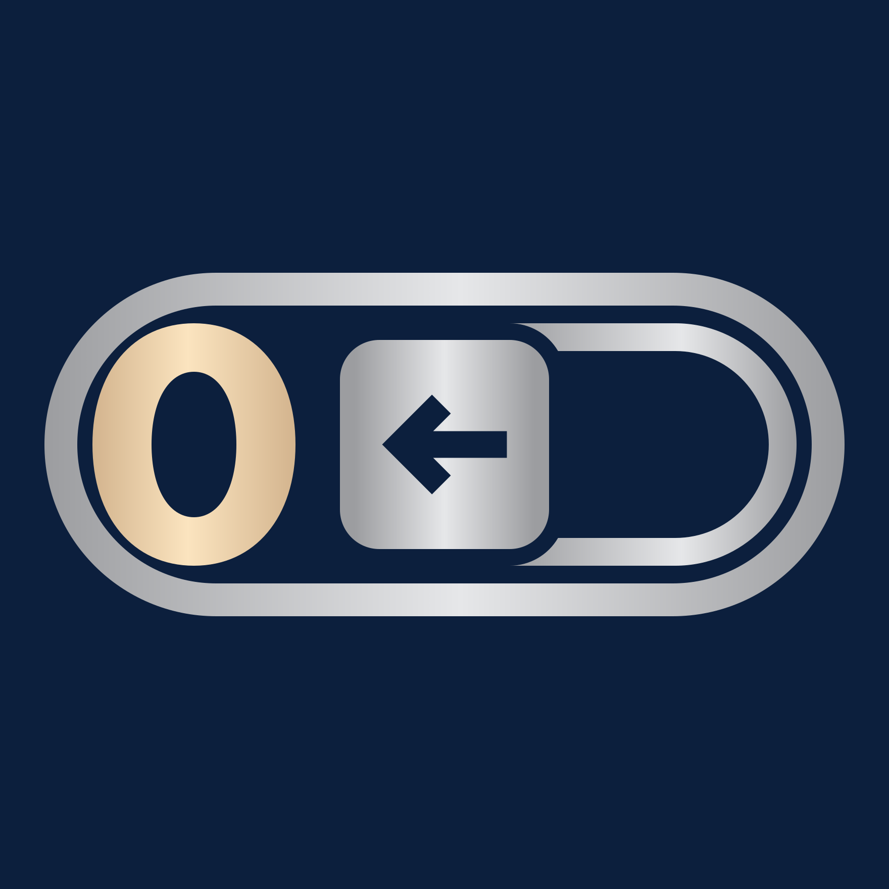

Sıfırla — yeni logo önizlemesi
Onay bekliyor. Bu sayfadaki her şey tek bir SVG üreticisinden (tasarim/logo-ciz.js) çiziliyor; renkler CSS değişkenine bağlı. Onaydan sonra ikonlar, splash, uygulama ve site aynı üreticiden üretilecek. Boyutlar gerçek: 29 px yazan 29 CSS pikseli.
1 Eski ↔ yeni, uygulama ikonu
Yeni ikon dosyası köşesiz tam kare, lacivert kenara kadar taşar (görseldeki beyaz köşeler yok). Köşeyi iOS/Android kendisi yuvarlar — sağdaki kesik çizgili kare ham dosya, yanındaki sistemin gösterdiği hâl.

Eski (kilit + halka)
Kaynak görsel2 Gerçek boyutlar
Üst satır eski, alt satır yeni. 48 px ve altında küçük varyant (c) devrede: hap içindeki ince koyu çizgi ve tuşun kabartma çerçevesi kalkar, çizgiler %25 kalınlaşır, "0"ın içi biraz açılır, ok kalınlaşır.
c Küçük varyant ne kazandırıyor
d iOS: varsayılan · koyu · renklendirilmiş
Koyu modda zemin saydam bırakılır (sistem koyu degrade çizer), ok tuşun üstünde siyaha yakın kalır. Renklendirilmiş modda Apple gri tonlu görseli alır, rengi kendisi basar; burada mavi ve sıcak tonla simüle edildi.
e Android: uyarlanabilir ikon + bildirim ikonu
Ön katman 108 dp; işaret, kırmızı kesikli 66 dp güvenli dairenin içinde (hapın uçları dahil — hiçbir maske kesmez). Arka katman düz lacivert. Bildirim ikonu tek renk, saydam; sistem beyaza/renge boyar.
kırmızı: 66 dp güvenli · mavi: 72 dp görünen
b · f Zeminsiz sembol: üst bar, Gece Mavisi ve Gümüş
Üst barda işaret, "Sıfırla" yazısının harf gövdesine optik hizalı (1 px aşağı; matematik ortası yükseltiyor). Gümüş temada iki seçenek var: f1 hap içi lacivert dolu (marka renkleri aynen korunur — önerim), f2 dolgusuz, açık zeminde okunsun diye koyulaştırılmış metal.
Gece Mavisi — zeminsiz sembol (b)
Gümüş — f1: lacivert dolgulu hap önerilen
Gümüş — f2: dolgusuz, koyu metal
Eski üst bar (karşılaştırma)
b Aylık rapor / paylaşım kartı başlığı
Favicon (site + PWA)
16/32 px'de geniş hap çok inceliyor; favicon'da kare zeminli küçük varyant kullanılacak (zemin işareti taşır).

Sıfırla — eskiNeyi düzelttim (kaynak görsele göre)
| Öğe | Kaynak görselde | Vektörde |
|---|---|---|
| Köşeler | Beyaz, yuvarlatılmış | Yok; tam kare lacivert, köşeyi sistem keser |
| Dikey hiza | "0" ortadan 8 px (2048'de) aşağıda, tuş/yuva 2–3 px | Hepsi aynı yatay eksende |
| Yatay denge | "0" ile yuva iç kenara ~43 px | Tam eşit: ikisi de hap iç kenarına 43 birim |
| Yuvanın sol ucu | Elle çizilmiş eğri | Tuşun köşesiyle eş merkezli yay (33 birim sabit boşluk) |
| Ok | Tuşta 2 px sola kaymış | Tuşa tam ortalı, 45° kollar, sivri uç, düz bitiş |
| Kalınlıklar | Hap 52 · yuva 44 · ok 44 (±2 dalgalı) | Sabit 52 / 44 / 44; hap içinde 8 birim koyu çizgi |
| Renk | JPEG gürültüsü | Zemin #0C1F3D; gümüş #9C9DA0 → #E6E7E9; şampanya #D3B48E → #FBE4BF — hepsi --logo-* değişkeni |
Not: Uygulamanın kendi koyu zemini #0A1220, logonun laciverti #0C1F3D (görselden ölçüldü). İkon ve native splash logonun lacivertini kullanır; giriş animasyonu bu renkten başlayıp uygulama zeminine geçer — böylece splash → animasyon arasında renk sıçraması olmaz.